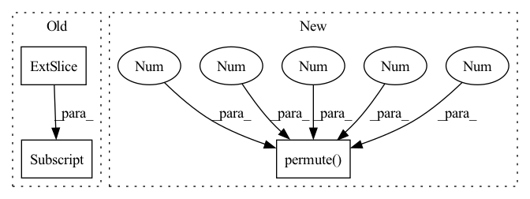

Pattern ID :600
Before Change
def forward(self, x):
base_shape = x.shape // x -> B x T x (H x W) x C
if self.pos_encodings:
x = x + self.spatial_positional_encoding + self.temporal_positional_encoding[:, :x.shape[1]]
if self.spatial_first:
x = self._spatial_attn(x, base_shape)
x = self._temporal_attn(x, base_shape)
After Change
// x += res
if self.scaler is not None:
if encoder:
x = x.permute(0 , 2 , 1 , 3 , 4 )
x = self.scaler(x)
x = x.permute(0, 2, 1, 3, 4)
else:
In pattern: SUPERPATTERN
Frequency: 4
Non-data size: 3
Instances Fragment ID: 2281670
Project Name: laion-ai/phenaki
Commit Name: e510eaef70feb098d2c1b5fac8b34291c1955c9e
Time: 2022-10-17
Author: d6582533@gmail.com
File Name: vivq.py
M Class Name: TemporalSpatialAttention
N Class Name: ResBlockvq
M Method Name: forward(5)
N Method Name: forward(2)
M Parent Class: nn.Module
N Parent Class: nn.Module
M File Name: vivq.py
N File Name: vivq.py
M Start Line: 38
M End Line: 48
N Start Line: 29
N End Line: 51
Before Change
// ic(self.cplx_comp.c)
feat_erb = torch.view_as_complex(spec).abs().matmul(self.erb_fb)
feat_erb = self.erb_comp(feat_erb)
feat_spec = self.cplx_comp(spec.squeeze(1)[:, :, : self.df_bins] .permute(0, 3, 1, 2))
// e0, e1, e2, e3, emb, c0, lsnr = self.enc(feat_erb, feat_spec)
// m = self.erb_dec(emb, e3, e2, e1, e0)
m, emb, _ = self.erb_stage(feat_erb)After Change
// spec = self.df_op(spec, df_coefs, df_alpha)
// ic(df_coefs.shape, spec.shape)
df_coefs, _, _ = self.df_stage(feat_spec)
df_coefs = df_coefs.unflatten(1, (self.df_order, 2)).permute(0 , 3 , 1 , 4 , 2 )
spec = self.df_op(spec, df_coefs, df_alpha)
return spec, m, lsnr, df_alpha
Fragment ID: 2281671
Project Name: rikorose/deepfilternet
Commit Name: 945221141385ce808c03235a16a5e66477f50923
Time: 2022-04-12
Author: h.schroeter@pm.me
File Name: DeepFilterNet/df/deepfilternet2.py
M Class Name: DfNet
N Class Name: DfNet
M Method Name: forward(5)
N Method Name: forward(5)
M Parent Class: nn.Module
N Parent Class: nn.Module
M File Name: DeepFilterNet/df/deepfilternet2.py
N File Name: DeepFilterNet/df/deepfilternet2.py
M Start Line: 320
M End Line: 332
N Start Line: 338
N End Line: 344
Before Change
def forward(self, x, attn_mask=None):
B, N, C = x.shape
qkv = self.qkv(x).reshape(B, N, 3, self.num_heads, C // self.num_heads)
q, k, v = qkv[:, :, 0].transpose(1, 2), qkv[:, :, 1].transpose(1, 2), qkv[:, :, 2] .transpose(1, 2)
// TODO benchmark vs above
//qkv = qkv.reshape(B, N, 3, self.num_heads, C // self.num_heads).permute(2, 0, 3, 1, 4)After Change
def forward(self, x):
B, N, C = x.shape
q, k, v = self.qkv(x).reshape(B, N, 3, self.num_heads, C // self.num_heads).permute(2 , 0 , 3 , 1 , 4 )
attn = (q @ k.transpose(-2, -1)) * self.scale
attn = attn.softmax(dim=-1)
attn = self.attn_drop(attn) Fragment ID: 2281669
Project Name: feng-lab/pytorch-image-models
Commit Name: 736f209e7d7ebe9a6ac9acf9967a7aba0a86aa4e
Time: 2020-10-26
Author: rwightman@gmail.com
File Name: timm/models/vision_transformer.py
M Class Name: Attention
N Class Name: Attention
M Method Name: forward(2)
N Method Name: forward(3)
M Parent Class: nn.Module
N Parent Class: nn.Module
M File Name: timm/models/vision_transformer.py
N File Name: timm/models/vision_transformer.py
M Start Line: 101
M End Line: 104
N Start Line: 110
N End Line: 110
Before Change
voting_map = voting_map.view(batch_size, self.region_num, self.num_classes, width, height)
heatmap = torch.zeros((batch_size, self.num_classes, width, height), dtype=torch.float).cuda()
for i in range(self.num_classes):
heatmap[:, i, :, :] = self.deconv_filters(voting_map[:, :, i, :, :]).squeeze(dim=1)
return heatmap
After Change
if self.model_v1:
batch_size, channels, width, height = voting_map.shape
voting_map = voting_map.view(batch_size, self.region_num, self.num_classes, width, height)
voting_map = voting_map.permute(0 , 2 , 1 , 3 , 4 )
voting_map = voting_map.reshape(batch_size, -1, width, height)
heatmap = self.deconv_filters(voting_map)
Fragment ID: 2281672
Project Name: nerminsamet/houghnet
Commit Name: b441d732dd6f90811cc153b24d8b7718558e4f36
Time: 2021-04-13
Author: nermin.samet@gmail.com
File Name: src/lib/models/networks/hough_module.py
M Class Name: Hough
N Class Name: Hough
M Method Name: forward(3)
N Method Name: forward(3)
M Parent Class: nn.Module
N Parent Class: nn.Module
M File Name: src/lib/models/networks/hough_module.py
N File Name: src/lib/models/networks/hough_module.py
M Start Line: 91
M End Line: 97
N Start Line: 117
N End Line: 123